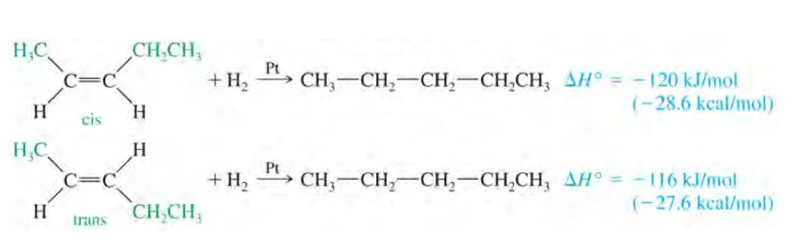
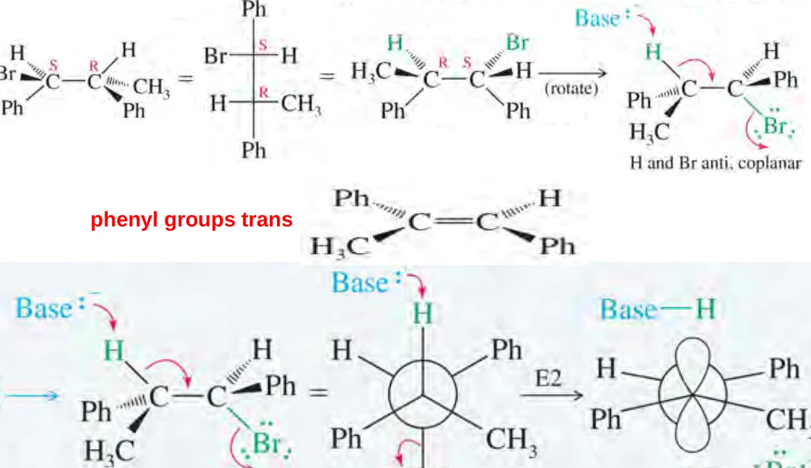
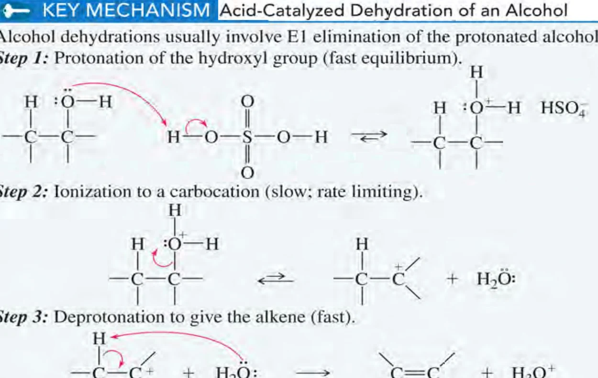

WEBSITE LESSON 15 · LECTURE 14 · CHAPTER 7-2
烯烃的稳定性与制备
氢化热 · 环张力 · E2 立体化学 · 反式二轴 · 醇脱水与合成路线
15.1 · HEATS OF HYDROGENATION
氢化热：把烯烃放到同一能量基准
烯烃在 Pt 等催化剂上与 H2 反应生成烷烃，氢化通常放热。用氢化热比较稳定性时，先检查烯烃是否生成同一个烷烃；共同产物提供相同的能量终点。起点能量越高，达到这一终点时放热越多，因此放热绝对值越小的烯烃通常越稳定。
课件以 1-丁烯与反-2-丁烯加氢到丁烷为例，反应焓约为 −127、−115 kJ·mol−1，二者起始焓相差约 12 kJ·mol−1。区分“ΔH 更负”和“放热绝对值更小”，可避免把顺序写反。不同课件表格的近似数值略有差别，比较同一组数据时保持同一基准。能量图上把共同产物画在同一水平线，再向上反推各烯烃的位置，就能直接读出相对焓差。
普通非环烯烃一般随烷基取代度增加而稳定，烷基的超共轭等作用可分散电子密度；同类二取代物中，反式通常因位阻较小而更稳定。课件的顺、反-2-丁烯氢化热约为 −120、−116 kJ·mol−1，对应约 4 kJ·mol−1 的稳定性差。排序还需检查环张力和特殊取代效应。

来源：Org. Chem. Lect. 14 (Chapter 7-2)，slide 3–10。
15.2 · RING STRAIN & BRIDGEHEAD ALKENES
环张力、反式环烯与 Bredt 规则
sp2 碳偏好约 120° 的平面几何。环丁烯的环内键角接近 90°，环丙烯更接近 60°，都会压缩双键角度并提高能量。课件中环丁烯氢化约放热 128 kJ·mol−1，环戊烯约 111 kJ·mol−1，用于显示小环双键的额外张力。这里加氢产物不同，比较时包含了产物环张力的变化。
反式双键要求连接在两端的环链跨到相对侧，小环难以容纳而使双键扭曲。课程采用的常温经验是：小于八元环的反式环烯通常不稳定，反式环辛烯已可存在，十元及更大环更容易容纳。非环体系常见的“反式较稳定”需要结合环几何重新判断。
Bredt 规则用于小型刚性桥环的桥头双键：桥头难以形成适合 π 重叠的平面几何，所以设计消除产物时通常排除该位置。课件以能容纳反式双键的较大环解释例外；“八元环”是本课的实用几何经验，实际稳定性仍取决于具体桥环骨架。
来源：Org. Chem. Lect. 14 (Chapter 7-2)，slide 11–16。
15.3 · CONCERTED ELIMINATION
E2：电子流、速率与反式共平面
脱卤化氢从相邻碳上各除去一个 H 和 X。连 X 的是 α 碳，其邻碳是 β 碳；在 β 碳上寻找可消除的氢。E2 为协同步骤：碱的孤对电子指向 β-H，C–H 键电子形成 C=C，C–X 键电子移向 X。三支箭同时画出，过程中没有独立碳正离子。
常见有利构象是 β-H 与离去基团反式共平面，沿 α–β 键看的二面角约 180°。这有利于成键和反键轨道重叠，也避免顺式共平面的重叠构象代价。开放链可绕单键寻找该构象；固定环系则要先审查几何。叔卤代烷阻碍 SN2，配合强碱常适合 E2；一级底物仍需评估取代竞争。
来源：Org. Chem. Lect. 14 (Chapter 7-2)，slide 17–20、22–24。
15.4 · REGIOSELECTIVITY & STEREOSPECIFICITY
区域选择性与立体专一性
区域选择性回答双键生成在哪两个碳之间。小体积碱常使较多取代的 Zaitsev 产物占优；叔丁醇盐等大体积碱较易接近位阻小的 β-H，可能使较少取代的 Hofmann 产物增加。实际顺序是先排除不满足几何的路径，再比较可行路径的位阻和产物结构。
立体专一性回答底物构型怎样映射到产物构型。课件 Problem 7-25 的两种非对映底物，用 Newman 投影旋转到 H 与 Br 反式共平面后，两个苯基分别落在相对侧或同侧，因此生成反式或顺式烯烃。E2 的产物由可反应构象决定；“反式共平面”描述的是反应前 H 与离去基团的关系。
试剂辨析：课件列有二异丙胺等位阻胺。中性二异丙胺与其锂盐 LDA 是不同试剂，碱性差异很大。练习中应使用题给底物、溶剂、温度和实际试剂判断；常规强碱促 E2 可先掌握醇盐，不能仅凭体积大就认作强碱。

来源：Org. Chem. Lect. 14 (Chapter 7-2)，slide 19–24。
15.5 · TRANS-DIAXIAL ELIMINATION
环己烷：先找反式二轴，再选产物
椅式环己烷中，相邻两个轴向键一上一下，恰好提供 E2 所需的反式共平面关系。因此离去基团必须在轴向，邻碳还要有方向相反的轴向 β-H。若 X 处于赤道位，先翻环：轴向与赤道向互换，但每个取代基的上、下构型保持不变。
操作时画出两张椅式，选择 X 轴向的一张，再逐个检查左右 β 碳；若某个轴向位置被甲基等取代基占据，该侧便缺少所需轴向氢。最稳定构象的比例会影响总反应速率，能反应的构象则决定允许的消除方向。
课件氘代 1-溴-2-甲基环己烷的例子中，Br 轴向时只有邻位 D 与它反式二轴，故脱去 D，得到图示产物。关键是 D 所在的位置满足几何要求；若另有满足条件的 H，速率还会受到同位素效应影响。先标方向再找轴向位置，比直接在平面六边形上挑“较多取代双键”更可靠。

来源：Org. Chem. Lect. 14 (Chapter 7-2)，slide 25–27。
15.6 · CARBOCATIONS & DEHYDRATION
E1 与酸催化醇脱水
仲、叔卤代烷在易电离的极性质子溶剂中，缺少强碱或强亲核试剂时，可先电离生成碳正离子，再失去 β-H 形成烯烃。E1 的速率主要取决于底物浓度；SN1 与它共享碳正离子中间体，所以常有取代竞争。氢迁移、烷基迁移或扩环可能改变碳骨架，设计合成时必须检查重排。
醇的 –OH 是较差离去基团，酸先把它质子化成 –OH2+，使水能够离去。对常见仲、叔醇，接着形成碳正离子，再由水等碱夺取 β-H，重新生成酸催化剂。浓硫酸或磷酸与加热常用于脱水；蒸出烯烃或移除水可推动可逆平衡。
常见反应活性顺序为三级醇＞二级醇＞一级醇。一级醇难以形成游离一级碳正离子，通常用质子化后协同消除描述，避免把所有醇脱水都硬套 E1。2-丁醇可给 1-丁烯和两种 2-丁烯，通常较多取代的 2-丁烯较多；存在重排机会时，先比较中间体再列产物。

来源：Org. Chem. Lect. 14 (Chapter 7-2)，slide 30–34。
15.7 · OTHER SYNTHETIC ROUTES
邻二卤化物脱卤与路线选择
邻二溴化物的两个 Br 在相邻碳上，可用 NaI／丙酮或 Zn／乙酸还原脱卤恢复双键。它移除的是两个卤素，与脱 HX 分开判断；Zn 提供还原当量，反应在金属表面进行。课件的构象例子还显示，邻二溴底物的立体关系会影响顺、反烯烃产物。
工业上可用烷烃催化裂化或高温脱氢获得小分子烯烃，但常形成混合物。课件末尾的路线总表还列出 Hofmann／Cope 消除、炔烃部分还原和 Wittig 反应：Lindlar 催化通常给顺式烯烃，溶解金属还原通常给反式烯烃；Wittig 以羰基和磷叶立德构建 C=C。这些是后续章节的接口，本课先建立“从什么官能团出发、去掉或加入哪些原子”的路线地图。
综合题依次检查：起始官能团、是否有 β-H、几何是否允许、试剂碱性和位阻、取代竞争及重排，最后标 E/Z。课件作业为第 309 页 Problem 7-19 与第 311 页 Problem 7-22。
最稳定的烯烃一定是主要产物吗？
主要产物先受可行路径和活化能控制。反式二轴要求可能排除某条路径，大体积碱也可能优先夺取更易接近的氢。
H 与 Br 必须反式，产物是否就一定是 E？
先把可消除的 H 与 Br 放到反式共平面，再读取留下的两个高优先级基团；它们可以同侧，也可以异侧。
来源：Org. Chem. Lect. 14 (Chapter 7-2)，slide 28–29、35–38。